Inspiration
Our inspiration came after we decided on a material. Because the project had to be cheap, we decided we could go around to all the makerspaces on campus that have lasercutters, and ask to repurpose the acrylic scrap they had acquired.
Design
Design for vertical space.
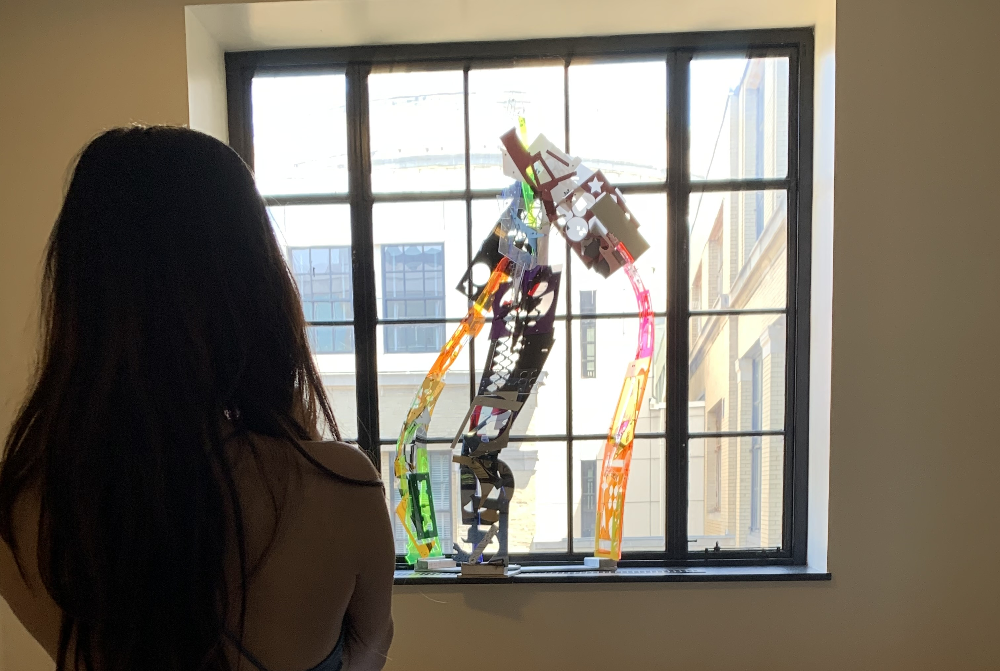
For the opening of a new design building on campus, our class was tasked with a project to make use of vertical space. There were practically no contraints on this project, other than the type of material we could use: it had to be cheap.
Our inspiration came after we decided on a material. Because the project had to be cheap, we decided we could go around to all the makerspaces on campus that have lasercutters, and ask to repurpose the acrylic scrap they had acquired.
Because we had decided on scrap material, we had to work with all types of shapes. The aspect that all the sheets had the same was a fairly quadrilateral perimeter. When thinking of these shapes, and how to attach them in a way that went up, we came up with a spider leg.
To properly display our sculpture, and to make use of our found material, we decided that it should be mounted to a windowsill. This is because a lot of our acrylic had some light altering properties, via color, transperancy, cutouts, etc.
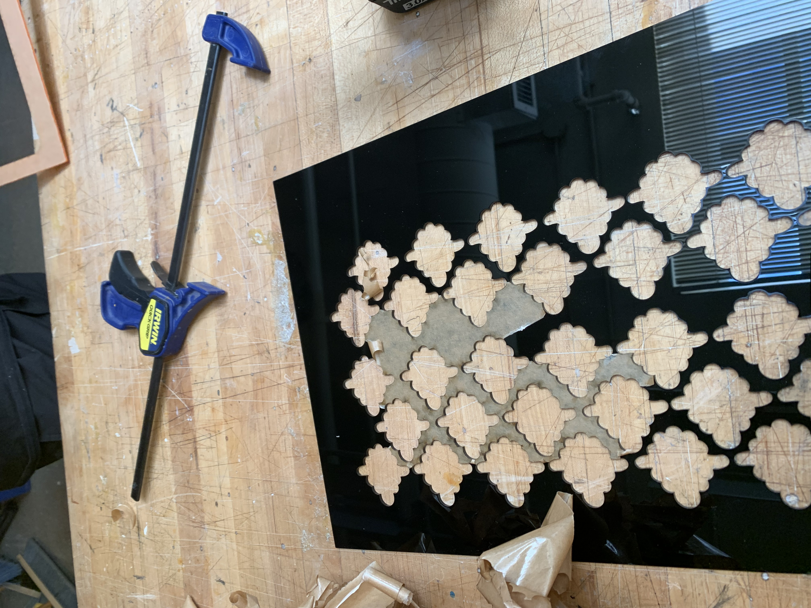
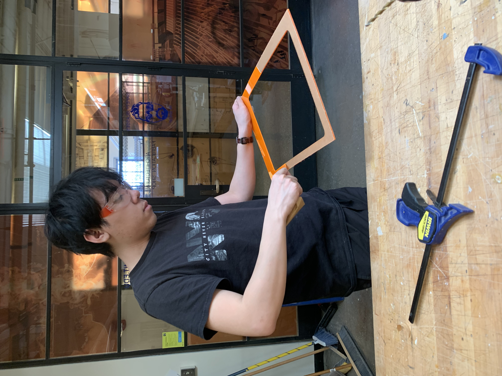
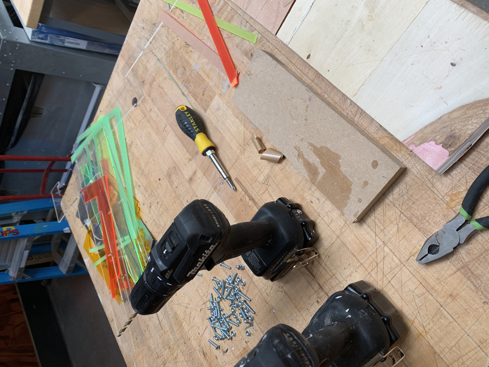
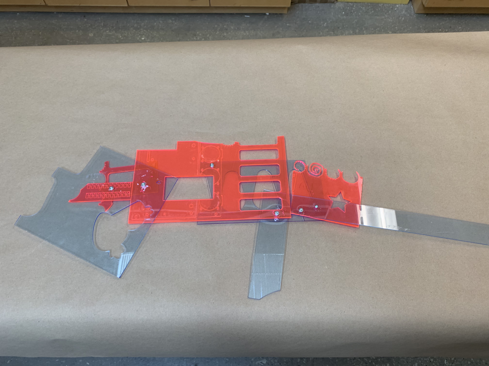
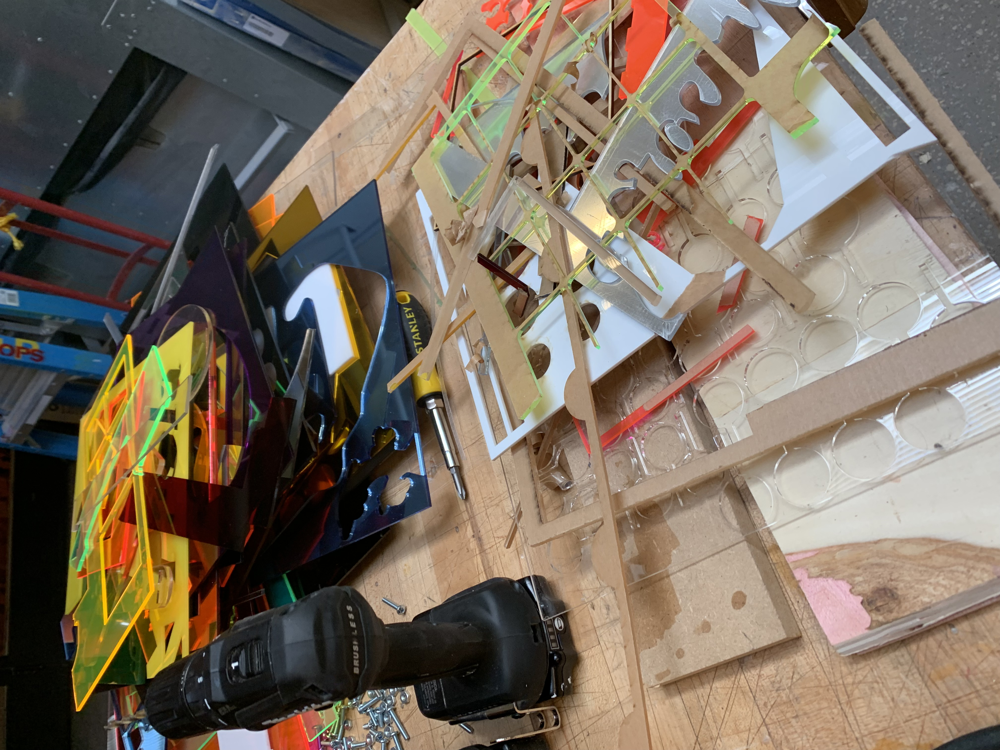
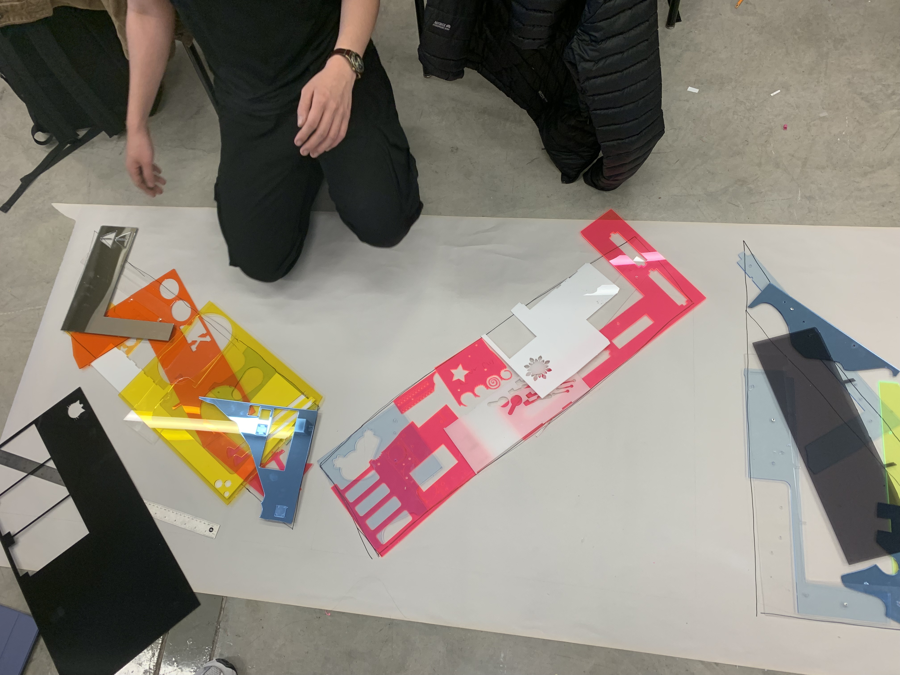
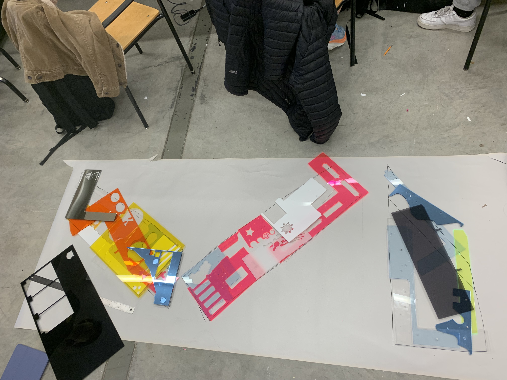
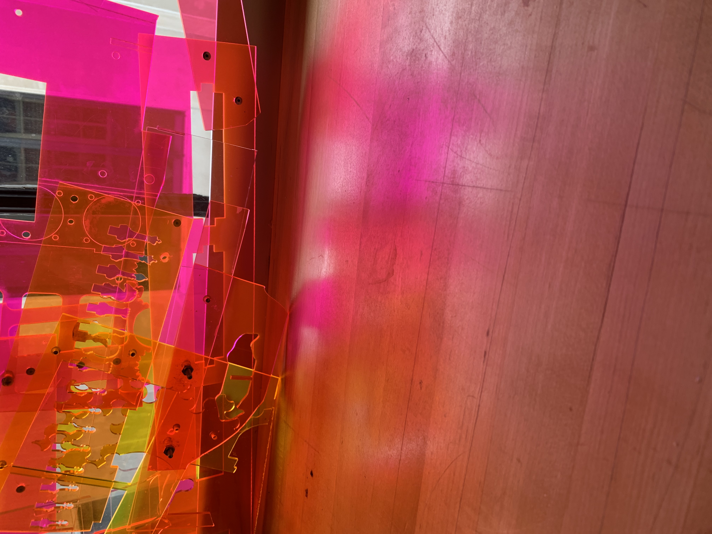
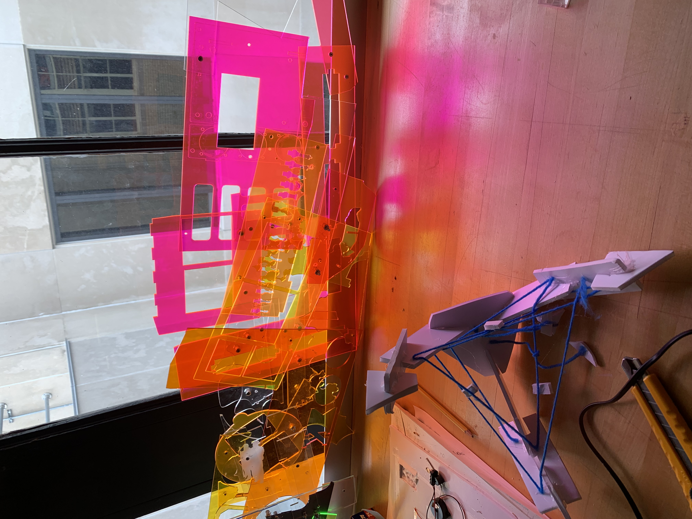
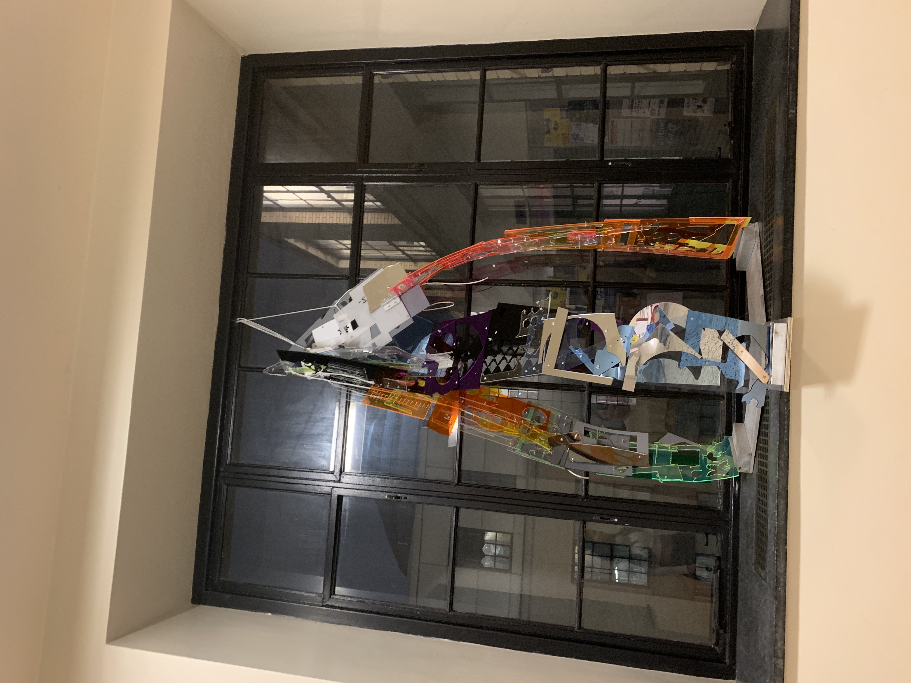
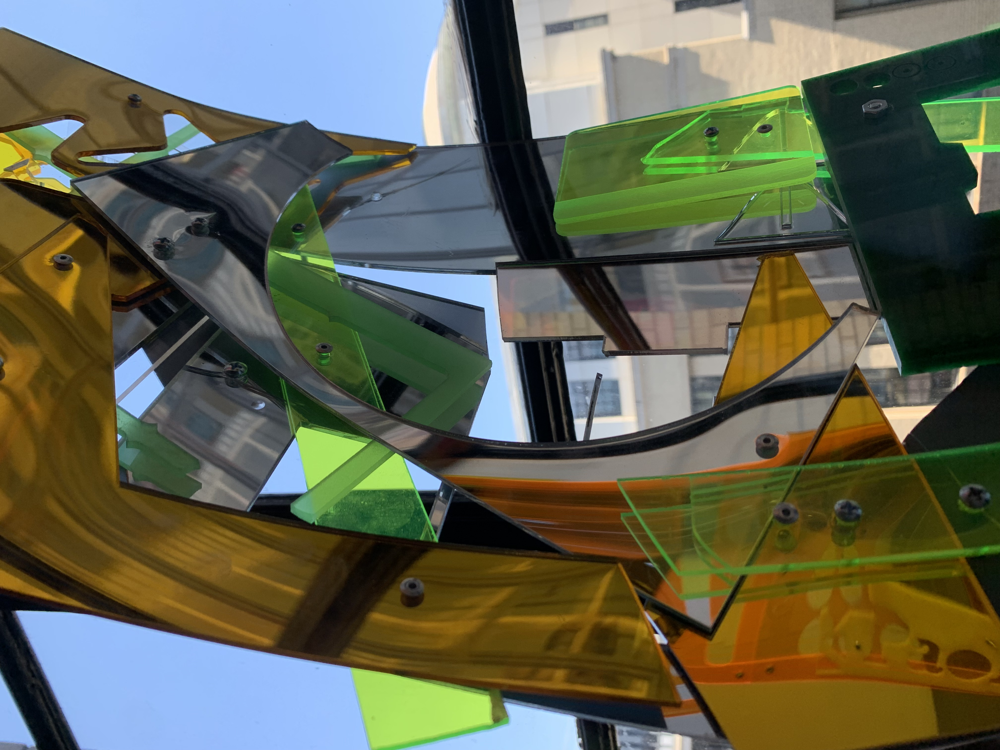
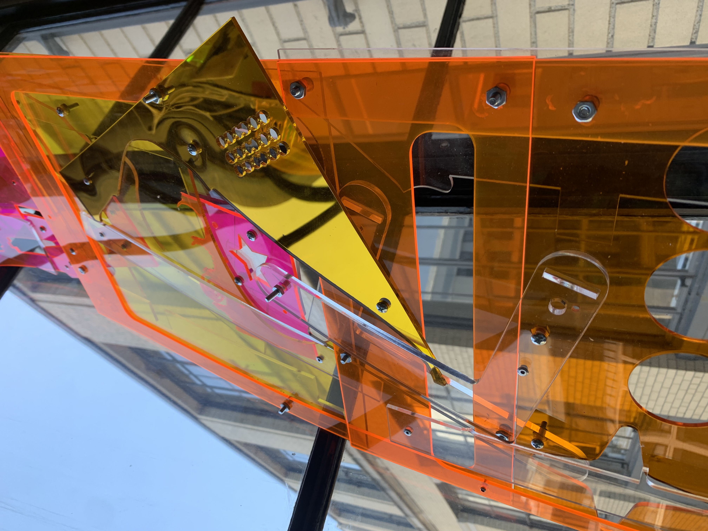
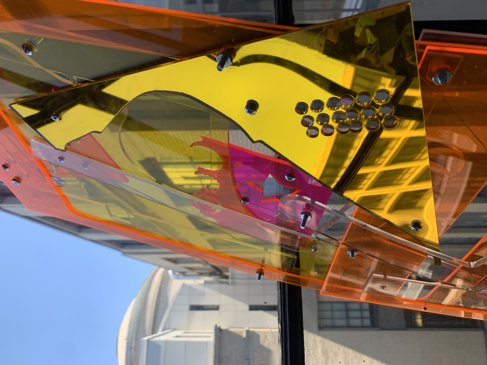